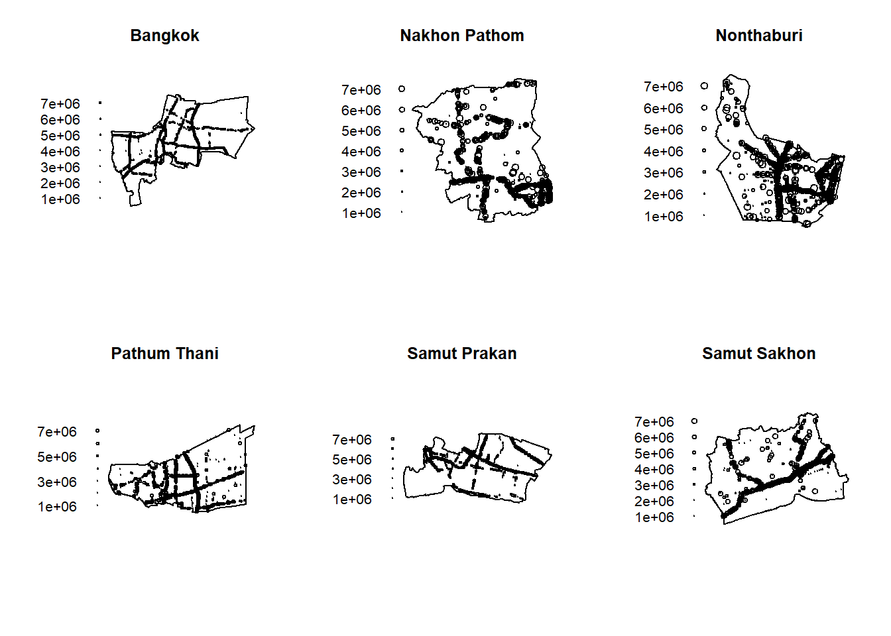
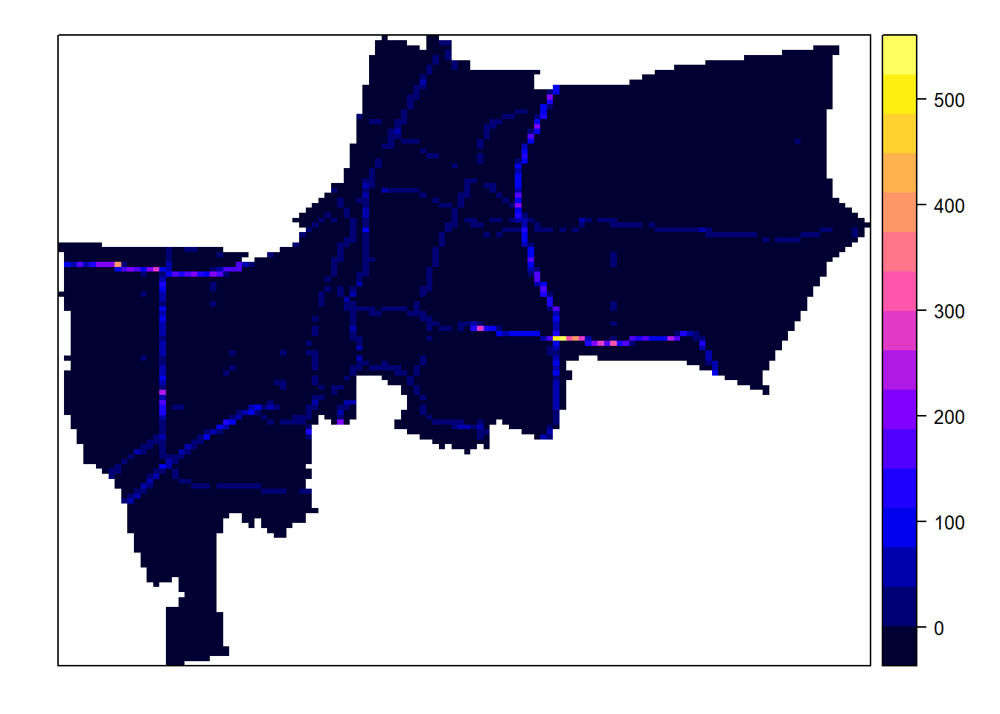
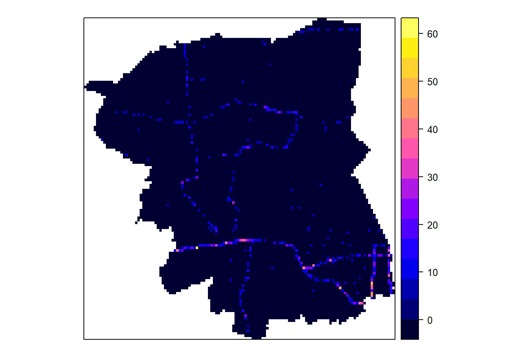
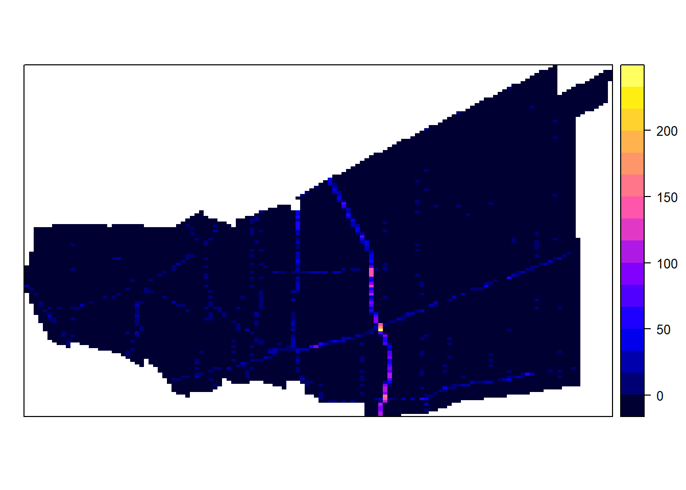
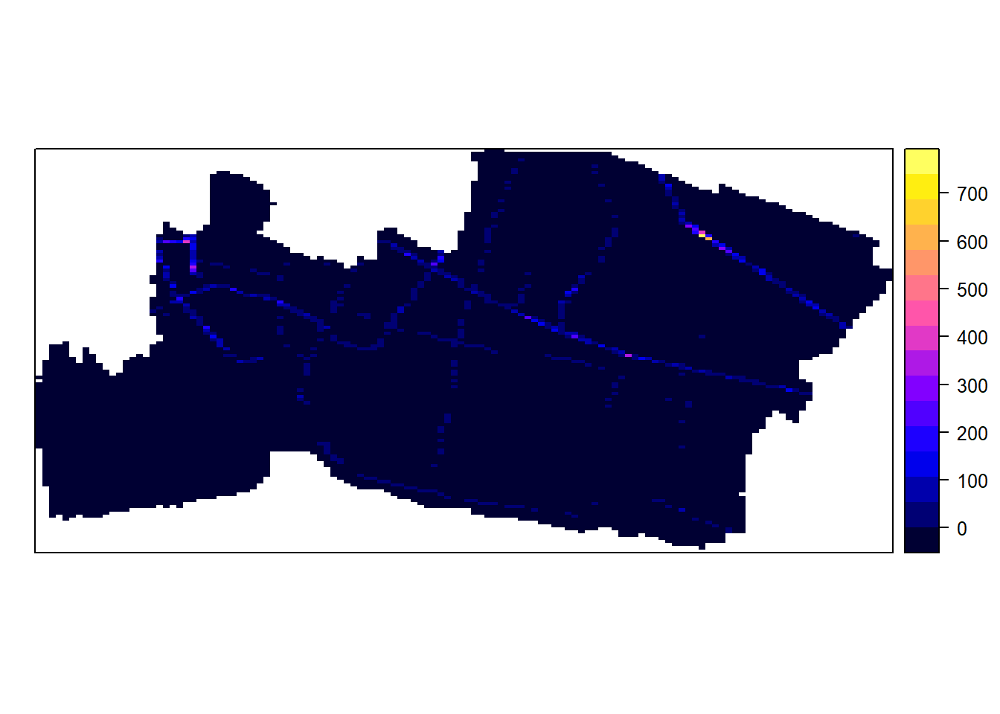
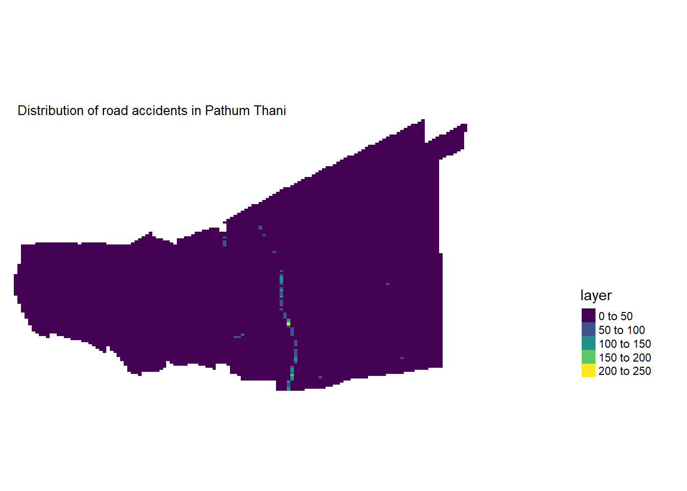

pacman::p_load(sf,spatstat,raster,maptools,tmap,tidyverse,spNetwork,DT,forcats,ggthemes,plotly)Take-home Exercise 1B
Take-Home Exercise 1: Geospatial Analytics for Public Good (Part 1B)
Loading the necessary R packages and data created in Part 1A
# loading datasets for analysis
#refer to Part 1A for earlier steps on data wranglign
roadacc <- read_rds("data/rds/roadacc.rds")
roadsbkk <- read_rds("data/rds/roadsbkk.rds")
provincedata32647 <- read_rds("data/rds/provincedata32647.rds")
roadacc_month_bkk <- read_rds("data/rds/roadacc_month_bkk.rds")
roadacc_month_sp <- read_rds("data/rds/roadacc_month_sp.rds")
roadacc_month_n <- read_rds("data/rds/roadacc_month_n.rds")
roadacc_month_pt <- read_rds("data/rds/roadacc_month_pt.rds")
roadacc_month_np <- read_rds("data/rds/roadacc_month_np.rds")
roadacc_month_ss <- read_rds("data/rds/roadacc_month_ss.rds")7. Spatial Point Pattern Analysis (SPPA)
We will conduct a Spatial Point Pattern Analysis (SPPA) to evaluate the distribution of road accidents within the Bangkok Metropolitan Region (BMR).
The specific questions we would like to answer are as follows:
are the road accidents in BMR randomly distributed throughout the region?
if no, then where are the locations with higher concentration of road accidents?
Specifically, we will be carrying out the following SPPA methods:
First-order SPPA
Spatial analysis of road traffic accidents using Network SPPA methods.
Spatio-temporal analysis of road accidents using Temporal Network SPPA methods.
7.1 Data Wrangling for SPPA
7.1.1 Converting data to ppp format for Spatial Point Pattern Analysis
Before we carry out spatial point pattern analysis, we need to convert the data from sf format to ppp format:
roadacc_ppp <- as.ppp(roadacc)
roadacc_pppMarked planar point pattern: 12985 points
marks are numeric, of storage type 'double'
window: rectangle = [591277.5, 710166.1] x [1486845.7, 1576520.5] unitsThe code chunk below plots roadacc_ppp for visualisation:
plot(roadacc_ppp)
We take a quick look at the summary statistics of the roadacc_ppp object using the code chunk below:
summary(roadacc_ppp)Marked planar point pattern: 12985 points
Average intensity 1.217956e-06 points per square unit
Coordinates are given to 10 decimal places
marks are numeric, of type 'double'
Summary:
Min. 1st Qu. Median Mean 3rd Qu. Max.
571882 3788970 3833867 4314374 6092695 7570954
Window: rectangle = [591277.5, 710166.1] x [1486845.7, 1576520.5] units
(118900 x 89670 units)
Window area = 10661300000 square units7.1.2 Checking for duplicate points
In SPPA, a significant issue is the presence of duplicates as the statistical methodology used for spatial point patterns processes is based largely on the assumption that process are simple i.e. that the points cannot be coincident. We check for duplication in a ppp object via the code chunk below:
any(duplicated(roadacc_ppp))[1] FALSEThe data does not have any duplicated points.
7.1.3 Creating an owin object
When analysing spatial point patterns, it is a good practice to confine the analysis within a geographical area like Singapore boundary. In spatstat, an object called owin is specially designed to represent this polygonal region. The code chunk below is used to covert provincedata32647 SpatialPolygon object into owin object of spatstat:
provinceowin <- as.owin(provincedata32647)The ouput object can be displayed by using plot() function
plot(provinceowin)
summary(provinceowin)Window: polygonal boundary
single connected closed polygon with 13779 vertices
enclosing rectangle: [587893.5, 712440.5] x [1484413.7, 1579076.3] units
(124500 x 94660 units)
Window area = 7668990000 square units
Fraction of frame area: 0.657.1.4 Combining point events object and owin object
We extract road accident events that are located within the BMR by using the code chunk below:
roadacc_owin_ppp = roadacc_ppp[provinceowin]plot(roadacc_owin_ppp)summary(roadacc_owin_ppp)Marked planar point pattern: 12985 points
Average intensity 1.693182e-06 points per square unit
Coordinates are given to 10 decimal places
marks are numeric, of type 'double'
Summary:
Min. 1st Qu. Median Mean 3rd Qu. Max.
571882 3788970 3833867 4314374 6092695 7570954
Window: polygonal boundary
single connected closed polygon with 13779 vertices
enclosing rectangle: [587893.5, 712440.5] x [1484413.7, 1579076.3] units
(124500 x 94660 units)
Window area = 7668990000 square units
Fraction of frame area: 0.657.2 First-order SPPA
The first-order SPPA will study how the intensity of road accidents vary across the BMR i.e. identify whether road accidents are more concentrated in areas due to underlying properties of the spatial environment.
For first-order SPPA, we will:
derive the kernel density estimation (KDE) layer for visualising and exploring the intensity of point processes,
perform Confirmatory SPPA using Nearest Neighbour statistics to determine if the road accidents are randomly distributed or influenced by underlying properties of the spatial environment.
7.2.1 Kernel Density Estimation (KDE)
We will proceed to compute the KDE of road accidents in the BMR. However, before we do so, we convert the unit of measurement to kilometer as the default unit of measurement of EPSG: 32647 is in metres, which would make the values hard to comprehend:
roadacc_owin_ppp.km <- rescale.ppp(roadacc_owin_ppp,1000,"km")7.2.1.1 Computing KDE using adaptive bandwidth
We will derive adaptive KDE using density.adaptive() of spatstat. Adaptive schemes adjust itself according to the density of data - shorter bandwidths are used where data are dense and longer where sparse. This helps to mitigate against highly skewed distribution of spatial point patterns.
kde_roadacc_adaptive <- adaptive.density(roadacc_owin_ppp.km, method = "kernel")plot(kde_roadacc_adaptive)8.1.1 Converting KDE output into grid object
We convert the KDE output for mapping purposes:
gridded_kde_roadacc_adaptive <- as.SpatialGridDataFrame.im(kde_roadacc_adaptive)
spplot(gridded_kde_roadacc_adaptive)8.1.2 Converting gridded output into raster
Next, we will convert the gridded KDE object into a RasterLayer object using raster() of raster package:
kde_roadacc_adaptive_raster <- raster(kde_roadacc_adaptive)We view the properties of kde_roadacc_adaptive_raster RasterLayer:
kde_roadacc_adaptive_rasterclass : RasterLayer
dimensions : 128, 128, 16384 (nrow, ncol, ncell)
resolution : 0.973023, 0.7395512 (x, y)
extent : 587.8935, 712.4405, 1484.414, 1579.076 (xmin, xmax, ymin, ymax)
crs : NA
source : memory
names : layer
values : -4.248362e-15, 233.4632 (min, max)Note that the CRS property is NA.
8.1.3 Assigning projection system
We hence assign CRS information to the kde_roadacc_adaptive_raster RasterLayer:
projection(kde_roadacc_adaptive_raster) <- CRS("+init=EPSG:32647")
kde_roadacc_adaptive_rasterclass : RasterLayer
dimensions : 128, 128, 16384 (nrow, ncol, ncell)
resolution : 0.973023, 0.7395512 (x, y)
extent : 587.8935, 712.4405, 1484.414, 1579.076 (xmin, xmax, ymin, ymax)
crs : +proj=utm +zone=47 +datum=WGS84 +units=m +no_defs
source : memory
names : layer
values : -4.248362e-15, 233.4632 (min, max)The CRS property is now completed.
8.1.4 Visualising the output in tmap
We will display the raster in cartographic quality map using tmap package:
tm_shape(kde_roadacc_adaptive_raster)+
tm_raster("layer",palette = "viridis")+
tm_layout(legend.outside = TRUE,
legend.outside.position = "right",
legend.position = c("right","bottom"),
main.title = "Distribution of road accidents (adaptive bandwidth)",
main.title.size = 0.8,
frame = FALSE)From the plot above, we note that road accidents occur more intensely along the road lines in Bangkok and Samut Prakan. To better understand how the intensity of road accidents occur across the BMR, we will extract the six provinces as different study areas for analysis and comparison in the next section.
8.2 Comparing Spatial Point Patterns using KDE
8.2.1 Extracting study areas
The code chunk will be used to extract the different provinces as different study areas:
bkk <- provincedata32647 %>%
filter(ADM1_EN == "Bangkok")
np <- provincedata32647 %>%
filter(ADM1_EN == "Nakhon Pathom")
n <- provincedata32647 %>%
filter(ADM1_EN == "Nonthaburi")
pt <- provincedata32647 %>%
filter(ADM1_EN == "Pathum Thani")
sp <- provincedata32647 %>%
filter(ADM1_EN == "Samut Prakan")
ss <- provincedata32647 %>%
filter(ADM1_EN == "Samut Sakhon")8.2.2 Creating owin object for each study area
bkk_owin = as.owin(bkk)
np_owin = as.owin(np)
n_owin = as.owin(n)
pt_owin = as.owin(pt)
sp_owin = as.owin(sp)
ss_owin = as.owin(ss)8.2.3 Combining road accident points and study area
By using the code chunk below, we are able to extract road accidents that is within the specific province to carry out our analysis later on.
roadacc_bkk_ppp = roadacc_ppp[bkk_owin]
roadacc_np_ppp = roadacc_ppp[np_owin]
roadacc_n_ppp = roadacc_ppp[n_owin]
roadacc_pt_ppp = roadacc_ppp[pt_owin]
roadacc_sp_ppp = roadacc_ppp[sp_owin]
roadacc_ss_ppp = roadacc_ppp[ss_owin]Next, rescale.ppp() function is used to transform the unit of measurement from metres to kilometres as EPSG: 32647 is in metres which would produce density values that are too small to comprehend.
roadacc_bkk_ppp.km = rescale.ppp(roadacc_bkk_ppp,1000,"km")
roadacc_np_ppp.km = rescale.ppp(roadacc_np_ppp,1000,"km")
roadacc_n_ppp.km = rescale.ppp(roadacc_n_ppp,1000,"km")
roadacc_pt_ppp.km = rescale.ppp(roadacc_pt_ppp,1000,"km")
roadacc_sp_ppp.km = rescale.ppp(roadacc_sp_ppp,1000,"km")
roadacc_ss_ppp.km = rescale.ppp(roadacc_ss_ppp,1000,"km")We then plot the 6 provinces and the locations of the road accidents:
par(mfrow=c(2,3))
plot(roadacc_bkk_ppp.km,main="Bangkok")
plot(roadacc_np_ppp.km,main="Nakhon Pathom")
plot(roadacc_n_ppp.km,main="Nonthaburi")
plot(roadacc_pt_ppp.km,main="Pathum Thani")
plot(roadacc_sp_ppp.km,main="Samut Prakan")
plot(roadacc_ss_ppp.km,main="Samut Sakhon")
8.2.4 Computing KDE for each study area
We will also derive adaptive KDE using density.adaptive() of spatstat for all six provinces:
kde_bkk_adaptive <- adaptive.density(roadacc_bkk_ppp.km, method = "kernel")
kde_np_adaptive <- adaptive.density(roadacc_np_ppp.km, method = "kernel")
kde_n_adaptive <- adaptive.density(roadacc_n_ppp.km, method = "kernel")
kde_pt_adaptive <- adaptive.density(roadacc_pt_ppp.km, method = "kernel")
kde_sp_adaptive <- adaptive.density(roadacc_sp_ppp.km, method = "kernel")
kde_ss_adaptive <- adaptive.density(roadacc_ss_ppp.km, method = "kernel")We will then convert the KDE output into a grid object for mapping purposes:
gridded_kde_bkk_adaptive <- as.SpatialGridDataFrame.im(kde_bkk_adaptive)
gridded_kde_np_adaptive <- as.SpatialGridDataFrame.im(kde_np_adaptive)
gridded_kde_n_adaptive <- as.SpatialGridDataFrame.im(kde_n_adaptive)
gridded_kde_pt_adaptive <- as.SpatialGridDataFrame.im(kde_pt_adaptive)
gridded_kde_sp_adaptive <- as.SpatialGridDataFrame.im(kde_sp_adaptive)
gridded_kde_ss_adaptive <- as.SpatialGridDataFrame.im(kde_ss_adaptive)spplot(gridded_kde_bkk_adaptive)spplot(gridded_kde_np_adaptive)
spplot(gridded_kde_n_adaptive)
spplot(gridded_kde_pt_adaptive)
spplot(gridded_kde_sp_adaptive)
spplot(gridded_kde_ss_adaptive)
Next, we will convert the gridded KDE object into a RasterLayer object using raster() of raster package and assign the CRS of EPSG 32647:
kde_bkk_adaptive_raster <- raster(kde_bkk_adaptive)
projection(kde_bkk_adaptive_raster) <- CRS("+init=EPSG:32647")
kde_bkk_adaptive_rasterclass : RasterLayer
dimensions : 128, 128, 16384 (nrow, ncol, ncell)
resolution : 0.5157047, 0.4002078 (x, y)
extent : 643.5344, 709.5446, 1492.136, 1543.363 (xmin, xmax, ymin, ymax)
crs : +proj=utm +zone=47 +datum=WGS84 +units=m +no_defs
source : memory
names : layer
values : -3.287751e-16, 366.6161 (min, max)kde_np_adaptive_raster <- raster(kde_np_adaptive)
projection(kde_np_adaptive_raster) <- CRS("+init=EPSG:32647")
kde_np_adaptive_rasterclass : RasterLayer
dimensions : 128, 128, 16384 (nrow, ncol, ncell)
resolution : 0.4431169, 0.4584598 (x, y)
extent : 587.8935, 644.6125, 1509.208, 1567.891 (xmin, xmax, ymin, ymax)
crs : +proj=utm +zone=47 +datum=WGS84 +units=m +no_defs
source : memory
names : layer
values : 4.371169e-10, 18.36673 (min, max)kde_n_adaptive_raster <- raster(kde_n_adaptive)
projection(kde_n_adaptive_raster) <- CRS("+init=EPSG:32647")
kde_n_adaptive_rasterclass : RasterLayer
dimensions : 128, 128, 16384 (nrow, ncol, ncell)
resolution : 0.2577626, 0.3028132 (x, y)
extent : 636.3416, 669.3352, 1524.865, 1563.625 (xmin, xmax, ymin, ymax)
crs : +proj=utm +zone=47 +datum=WGS84 +units=m +no_defs
source : memory
names : layer
values : 0.0004333219, 47.02454 (min, max)kde_pt_adaptive_raster <- raster(kde_pt_adaptive)
projection(kde_pt_adaptive_raster) <- CRS("+init=EPSG:32647")
kde_pt_adaptive_rasterclass : RasterLayer
dimensions : 128, 128, 16384 (nrow, ncol, ncell)
resolution : 0.5218025, 0.3122371 (x, y)
extent : 643.7786, 710.5693, 1539.11, 1579.076 (xmin, xmax, ymin, ymax)
crs : +proj=utm +zone=47 +datum=WGS84 +units=m +no_defs
source : memory
names : layer
values : -1.098021e-16, 223.7231 (min, max)kde_sp_adaptive_raster <- raster(kde_sp_adaptive)
projection(kde_sp_adaptive_raster) <- CRS("+init=EPSG:32647")
kde_sp_adaptive_rasterclass : RasterLayer
dimensions : 128, 128, 16384 (nrow, ncol, ncell)
resolution : 0.4386052, 0.2064404 (x, y)
extent : 656.299, 712.4405, 1490.796, 1517.22 (xmin, xmax, ymin, ymax)
crs : +proj=utm +zone=47 +datum=WGS84 +units=m +no_defs
source : memory
names : layer
values : -6.855306e-14, 734.734 (min, max)kde_ss_adaptive_raster <- raster(kde_ss_adaptive)
projection(kde_ss_adaptive_raster) <- CRS("+init=EPSG:32647")
kde_ss_adaptive_rasterclass : RasterLayer
dimensions : 128, 128, 16384 (nrow, ncol, ncell)
resolution : 0.332527, 0.2598575 (x, y)
extent : 611.1044, 653.6678, 1484.414, 1517.676 (xmin, xmax, ymin, ymax)
crs : +proj=utm +zone=47 +datum=WGS84 +units=m +no_defs
source : memory
names : layer
values : -1.736085e-16, 285.6541 (min, max)8.1.4 Visualising the output in tmap
We will display the raster in cartographic quality map using tmap package:
tm_shape(kde_bkk_adaptive_raster)+
tm_raster("layer",palette = "viridis")+
tm_layout(legend.outside = TRUE,
legend.outside.position = "right",
legend.position = c("right","bottom"),
main.title = "Distribution of road accidents in Bangkok (adaptive bandwidth)",
main.title.size = 0.8,
frame = FALSE)
tm_shape(kde_np_adaptive_raster)+
tm_raster("layer",palette = "viridis")+
tm_layout(legend.outside = TRUE,
legend.outside.position = "right",
legend.position = c("right","bottom"),
main.title = "Distribution of road accidents in Nakhon Pathom (adaptive bandwidth)",
main.title.size = 0.8,
frame = FALSE)tm_shape(kde_n_adaptive_raster)+
tm_raster("layer",palette = "viridis")+
tm_layout(legend.outside = TRUE,
legend.outside.position = "right",
legend.position = c("right","bottom"),
main.title = "Distribution of road accidents in Nonthaburi (adaptive bandwidth)",
main.title.size = 0.8,
frame = FALSE)
tm_shape(kde_pt_adaptive_raster)+
tm_raster("layer",palette = "viridis")+
tm_layout(legend.outside = TRUE,
legend.outside.position = "right",
legend.position = c("right","bottom"),
main.title = "Distribution of road accidents in Pathum Thani (adaptive bandwidth)",
main.title.size = 0.8,
frame = FALSE)tm_shape(kde_sp_adaptive_raster)+
tm_raster("layer",palette = "viridis")+
tm_layout(legend.outside = TRUE,
legend.outside.position = "right",
legend.position = c("right","bottom"),
main.title = "Distribution of road accidents in Samut Prakan (adaptive bandwidth)",
main.title.size = 0.8,
frame = FALSE)
tm_shape(kde_ss_adaptive_raster)+
tm_raster("layer",palette = "viridis")+
tm_layout(legend.outside = TRUE,
legend.outside.position = "right",
legend.position = c("right","bottom"),
main.title = "Distribution of road accidents in Samut Sakhon (adaptive bandwidth)",
main.title.size = 0.8,
frame = FALSE)From the plots above, we note the maximum KDE for each province (in descending order) and details for each province as follows:
Samut Prakan - up to 600 to 800. Most of the road accidents optically seem to occur at 4 short segments.
Bangkok - up to 300 to 400. Most of the road accidents optically seem to occur at 4 short segments.
Samut Sakhon: Max density up to 250 to 300. Most of the road accidents seem to occur along the same major road.
Pathum Thani - up to 200 to 250. Most of the road accidents seem to occur along the same major road.
Nonthaburi - up to 40 to 50. Most of the road accidents optically seem to occur at 8 segments.
Nakhon Pathom - up to 15 to 20. Most of the road accidents optically seem to occur at one major road and 3 mid-sized road segments.
Further observations are as follows:
- Notably, while Bangkok is a known tourist destination/major urban hub, it ranks second to Samut Prakan in terms of road accident density.
- Road accidents seem more scattered in Nonthaburi and Nakhon Pathom which suggest that there could be more complex road systems in these areas where accidents could occur at various points.
9. Nearest Neighbour Analysis
We will perform the Clark-Evans test of aggregation for spatial point pattern:
The test hypotheses are:
H0: The distribution of road accidents is randomly distributed.
H1: The distribution of road accidents is not randomly distributed.
The 95% confidence interval will be used.
9.1 Testing spatial point patterns using Clark and Evans Test
clarkevans.test(roadacc_owin_ppp.km,
correction = "none",
clipregion = "province_owin",
alternative = c("clustered"),
nsim = 999)Since p-value is less than 0.05, we reject the null hypothesis at 95% confidence interval. There is sufficient evidence to indicate that the distribution of road accidents is not randomly distributed.
clarkevans.test(roadacc_bkk_ppp.km,
correction="none",
clipregion=NULL,
alternative=c("two.sided"),
nsim=999)clarkevans.test(roadacc_np_ppp.km,
correction="none",
clipregion=NULL,
alternative=c("two.sided"),
nsim=999)clarkevans.test(roadacc_n_ppp.km,
correction="none",
clipregion=NULL,
alternative=c("two.sided"),
nsim=999)clarkevans.test(roadacc_pt_ppp.km,
correction="none",
clipregion=NULL,
alternative=c("two.sided"),
nsim=999)clarkevans.test(roadacc_sp_ppp.km,
correction="none",
clipregion=NULL,
alternative=c("two.sided"),
nsim=999)clarkevans.test(roadacc_ss_ppp.km,
correction="none",
clipregion=NULL,
alternative=c("two.sided"),
nsim=999)Based on the results above, for which p-values are less than 0.05, we reject the null hypothesis at 95% confidence interval. There is sufficient evidence to indicate that the distribution of road accidents in all provinces is not randomly distributed.
10. Network Constrained Spatial Point Patterns Analysis
tmap_mode('view')
tm_shape(roadacc)+
tm_dots()+
tm_shape(roadsbkk)+
tm_lines()
tmap_mode('plot')11. Network KDE (NKDE) Analysis
11.1 Preparing the lixels objects
Before computing NKDE, the roadsbkk object needs to be cut into lixels with a specified minimal distance. We do this using lixelize_lines() of spNetwork as shown in the code chunk below.
lixels <- lixelize_lines(roadsbkk, 5000, mindist = NULL)11.2 Generating line centre points
Next, lines_center() of spNetwork will be used to generate a SpatialPointsDataFrame (i.e. samples) with line centre points as shown in the code chunk below:
samples <- lines_center(lixels)The points are located at center of the line based on the length of the line.
11.3 Performing NKDE
Prior to performing NKDE calculations:
future::plan(future::multisession(workers=2))We will compute NKDE using the code chunk below:
densities <- nkde(roadsbkk,
events = roadacc,
w = rep(1,nrow(roadacc)),
samples = samples,
kernel_name = "quartic",
bw = 300,
div = "bw",
method = "discontinuous",
digits = 1,
tol = 1,
grid_shape = c(10,10),
max_depth = 8,
agg = 5,
sparse = TRUE,
verbose = FALSE)11.3.1 Visualising NKDE
Before visualising NKDE values, we use the code chunk below to insert the computed density values into samples and lixels objects as density field. We also multiply the densities by 1000 to rescale the density values from metres (as the EPSG 32647 projection system is in metres which make the computed density values very small and hard to comprehend) to number of events per kilometer:
samples$density <- densities*1000
lixels$density <- densities*1000